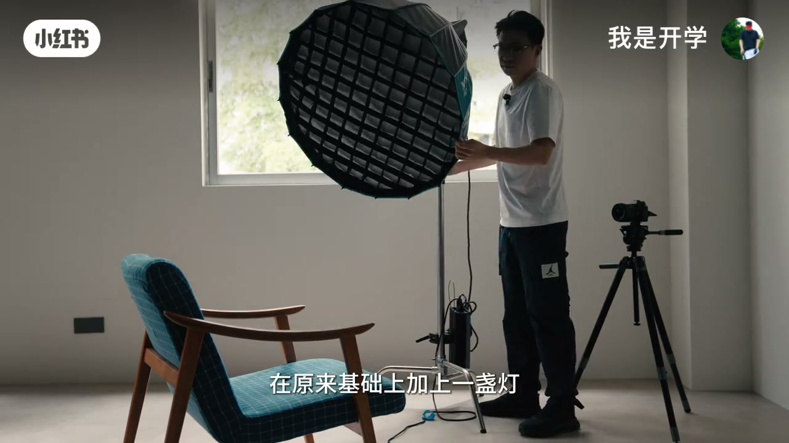
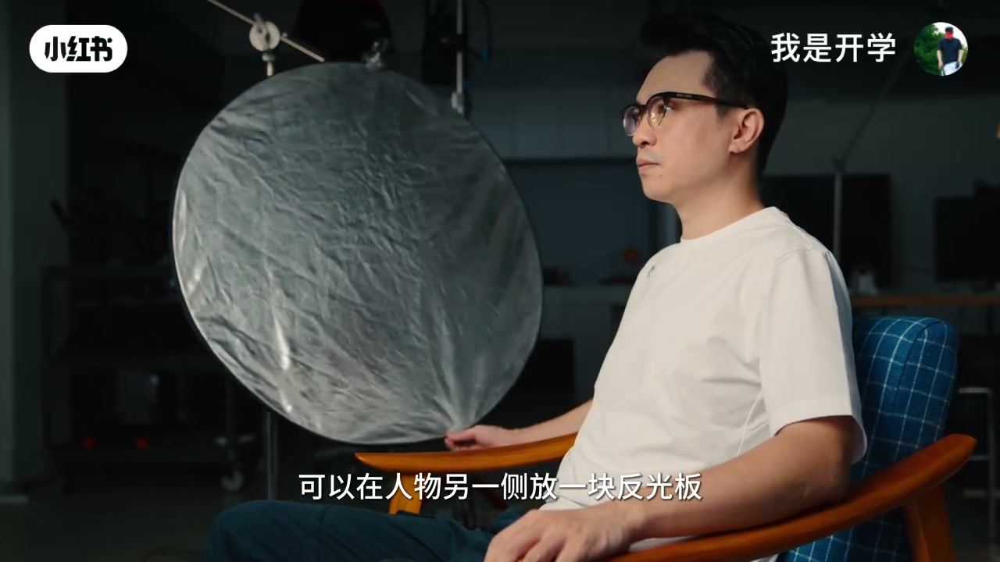
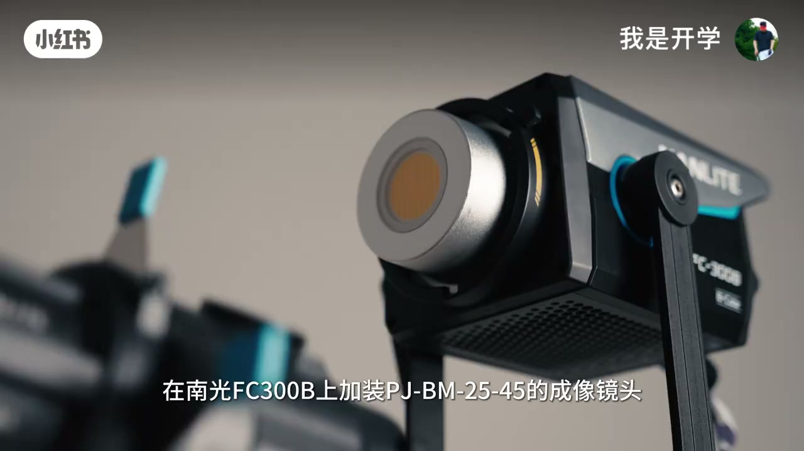
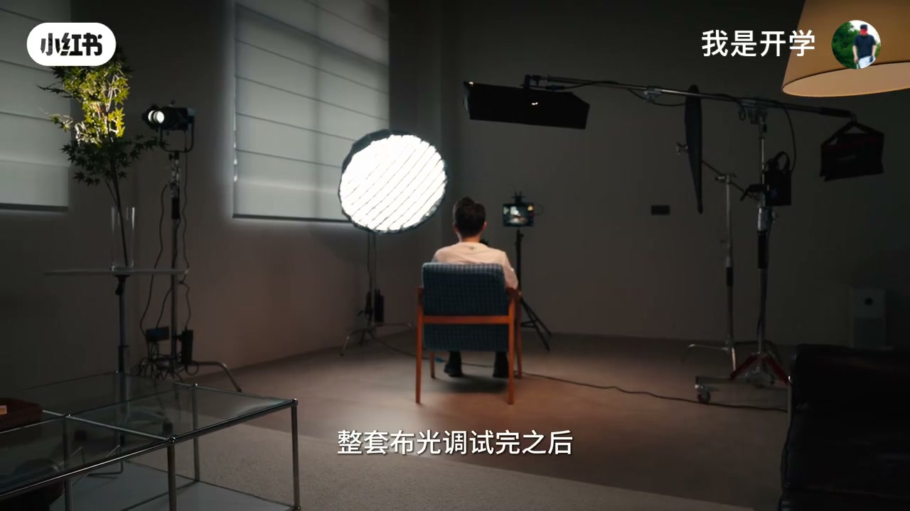

内容要点
一支 6 分半的口播拍摄布光教程。UP 主「我是开学」把高质感口播画面拆成一套底层思路：无论手头什么设备，掌握「先侧向光源制造面部立体感、再补一盏可控主灯让人物从背景跳出、按空间选焦段、用免费方案解决监看与提词」，最后叠加反光板、背景色温差、轮廓光和造型光四个进阶技巧，前机用 S-Log3 拍摄、后期套定制 LUT 直接出片。核心结论：好的画面不需要昂贵设备，更多是对光的理解。
知识结构
面朝窗户脸部偏平几乎无阴影；侧向窗户后脸上自然出现阴影、立体感增强。环境偏暗时不要调高 ISO（背景会跟着变亮），而是加一盏灯让背景保持自然亮度，人物瞬间从背景跳出，明暗反差把观众注意力集中在人物身上。这盏灯完全可控，等于拥有了一个永远稳定的太阳。
20mm 适合狭小空间、靠广角拉伸拍出开阔感，但易入杂物；50mm 观感最接近人眼、虚化分离感强，但对空间要求高（人机约 1.5 米、人与背景至少 2-3 米）；35mm 兼顾画面干净与环境容纳，是小空间口播最实用的焦段。
相机较远时翻转屏看不清细节，可用图传加 iPad 监看；低成本平替是用 USB-C 线连接相机和手机当监看画面，手机屏幕还能直接当提示器，配合 35/50mm 焦段眼神不飘、像直视观众。
① 反光板提亮阴影减弱对比，换黑色吸光面则加深阴影增强立体感；② 背景小灯设 2900-3200K，与主灯 5600K 形成冷暖对比区分前后景；③ 人物上方加轮廓光（3200K 与背景一致）勾勒发丝边缘，遵循逻辑光源原则；④ 成像镜头加树叶切片在背景投射斑驳光影模拟阳光穿窗。
用手机 APP 统一管控所有灯光的亮度色温；相机 Sony ZV-1 用 S-Log3 拍摄，前机布光扎实则后期压力小；作者定制了适配口播人像的 LUT，素材导入直接套用、检查曝光肤色即可出片。
高质感口播画面 = 侧光立体感 + 一盏可控主灯做明暗分离 + 按空间选焦段 + 四招进阶质感 + 前机打光到位后期套 LUT。找对光源位置、控制色温关系、让人物从背景分离，一盏灯也能拍出有层次的画面。
00:00-01:35人物位置与主光：先侧光立体，再补一盏可控的太阳
视频开门见山：「一个高质感的抠波画面，核心其实离不开一套底层的拍摄思路。」无论手头是什么设备，只要掌握这套逻辑，在有线的预算和有限的空间里也能还原出高级感。
第一步是人物在空间里的位置。很多人拍视频习惯面向窗户、脸朝着光——确实会亮一些，但「整个面部的光会比较平，几乎看不到阴影，缺少一些立体感」。只要侧向窗户、人物稍微侧一点，光从侧面打过来，脸上自然就有了阴影，立体感明显增强。
但现实往往是光线不理想。UP 主拉起窗帘模拟房间较暗或窗外阴天的情况，画面很暗。此时如果为提亮脸部去调高 ISO，「结果就是背景也跟着变亮了」。正确做法是不改 ISO，在原基础上加一盏灯，让背景保持原本自然的亮度，人物瞬间从背景里跳了出来。这种背景暗、人物亮的明暗反差，不仅让画面更有层次感，还能让观众的注意力立刻集中在人物身上。
这盏灯与自然光不同，它完全可控、不受云层影响，「你就拥有了一个永远稳定的太阳」——这是整套布光公式的基石。


01:36-03:00焦段选择：小空间口播首选 35mm
构图里焦段的选择非常重要，选哪个焦段很大程度上取决于拍摄空间。UP 主逐一对比了三个焦段。
20mm：人物离相机大约一臂距离，人物和观众距离更近、活人感更强，同时背景信息量更大；弊端是视角宽广，环境中的杂物和杂乱背景很容易入镜。但它十分适配狭小场景，依靠广角透视的拉伸效果，在小空间里也能拍出开阔的视觉感受，只要人物保持在画面中心就不会有超广角的畸变感。
50mm：观感最接近人眼看到的，背景容量更少但虚化更明显，人物离背景越远分离感越强。但这个焦段对空间要求更高，想要维持同等人物构图，人和相机需要保持大概 1.5 米的距离，人和背景之间还要至少 2-3 米，场地局促很难满足。
综合下来，如果是小空间拍摄，35mm 是更好的中间选择：视角比 20mm 窄、不容易拍到杂物，同时还能容纳适量的环境元素，又不会像 50mm 那样需要充足的后退距离，是小空间口播最实用的焦段。

03:01-03:42监看与提词：图传+iPad，或手机免费平替
当机位和焦段选好后，大概率会遇到一个问题：相机距离较远，即使是翻转屏也很难看清画面，没办法及时调整细节。UP 主目前的方案是图传加 iPad 进行监看。
如果想要成本更低的平替方案，可以试试免费软件：用一根 USB-C 线连接相机和手机，或者蓝牙模式，搭配一个转接键把手机固定在相机上，就能直接当监看画面用。
另外，这块手机屏幕还可以直接用来做提示器。UP 主用的免费 APP 叫「千层饼提示器」，手机刚好放在镜头上沿的位置，配合 35mm 或 50mm 焦段，看提示器的时候眼神不会飘来飘去，更像是在直视观众的视角。

03:43-05:30进阶质感四招：反光板、色温差、轮廓光、造型光
其实只靠一盏主灯已经能打出比较好看的画面了——UP 主用的是南光 FC500B 搭配 90mm 深抛柔光箱。在此基础上想进一步提升画面质感，还有几个进阶技巧。
第一招是控制面部阴影：如果既要保留背景分离的效果、又不想让面部阴影对比过于强烈，可以在人物另一侧放一块反光板，借助反射光提亮面部阴影；反过来想要阴影更加强烈，把反光板换成黑色的吸光面，就能加深阴影、增强面部立体感。
第二招是背景氛围灯：在背景放置一些小灯，色温大概在 2900K 到 3200K 区间，而相机和主灯的色温都设置在 5600K、非常接近白天的日光。这样背景和主光就有了色温差，形成冷暖对比，把前景人物和背景区分开，画面层次更丰富、人物也更突出。
第三招是轮廓光：在人物上方再添一盏 PavoTube Slim 120B，同样是双色温可调。UP 主把它的色温设置到 3200K，目的是尽量与背景环境光保持一致，同时人物的轮廓也被勾勒出来。这盏轮廓光遵循逻辑光源的原则——模拟背景那一组小灯发散出来的光线，仿佛背景的暖光真实地洒在人物发丝边缘，光影逻辑统一，画面更真实自然。
第四招是造型光：如果拍摄背景是一堵单调的白墙，可以在南光 FC300B 上加装 PJ-BM2545 成像镜头，既能控制光影的虚实、调节光圈大小，还能搭配切片实现多种造型光效。比如把树叶放在镜头前方，就能在背景上投射出斑驳的光影，模拟阳光穿过窗外树叶洒进室内的效果，背景层次立刻就丰富起来。




05:31-06:34成片流程：手机控灯 + S-Log3 + 定制 LUT 直出
整套布光调试完之后，坐在机位前通过手机 APP 就可以统一管控所有灯光的亮度和色温：想把背景灯调亮一点、色温再调到更暖，看着监视器的实时画面随手就能完成，大幅提升拍摄调整的效率。
相机用的是 Sony ZV-1，以 S-Log3 曲线拍摄。UP 主强调「前机把光线做到位，后期的压力变得非常小」——他专门制作了一套适配口播人像的定制 LUT，拍完素材导入之后直接就可以套用，不需要复杂的调色，简单检查一下曝光和肤色基本上就可以直接出片。
视频最后点题：好的画面不需要昂贵的设备，更多的时候是对光的理解。找对光源位置、控制好色温关系、让人物从背景里分离出来——这些逻辑搞清楚了，一盏灯也能拍出有层次的画面。

完整转录（226段）
以下文本由 Whisper medium 模型自动转录，可能存在少量识别误差，已尽可能修正。
一个高质感的口波画面
核心其实离不开一套底层的拍摄思路
无论你手头用的是什么设备
只要掌握这套逻辑
在有钱的预算和有钱的空间里
也能还原出这种高级感
今天我手把手带你完整拆解这套通用方案
并分享几个
让画面质感瞬间翻倍的进阶技巧
本期干货密度很高
建议你先点个收藏关注
我们现在开始
首先要考虑的是人物在空间里的位置
大家都知道拍视频要找光
但很多人习惯面向窗户
脸朝着光
的确会亮一些
但你会发现整个面部的光会比较平
几乎看不到阴影
缺少一些立体感
但是这个时候
只要侧向窗户
人物稍微侧一点
光从侧面打过来
脸上自然就有了阴影
立体感也会强很多
但现实情况往往是
即便有窗户
光线也并不总是理想的
比如我现在把窗帘拉起来
来模拟房间光线较暗
或者窗外是阴天的情况
你会发现脸上虽然有些对比
但画面看上去还是很暗
如果你为了提亮脸部
去调高ISO
结果就是背景也跟着变亮了
如果我们不改变ISO
在原来基础上加上一盏灯
让背景保持它原本自然的亮度
你会发现人物瞬间从背景里跳了出来
这种背景暗
人物亮的明暗反差
不仅能让画面更有层次感
还能让观众的注意力
立刻集中在你的身上
而且这盏灯是完全可控的
它不像自然光
会受云层的影响
导致曝光或明或暗
有了它
你就拥有了一个永远稳定的太阳
在构图里
焦段的选择非常重要
不同焦段会带来不同的画面感受
选哪个焦段
很大程度上取决于你的拍摄空间
20毫米
人物离相机大约一臂距离
人物和观众距离更近
活人感也更强
同时背景容量信息量更大
弊端是视角宽广
环境中的杂物和杂乱背景很容易入镜
不过这个焦段十分适配狭小的场景
依靠广角透视的拉伸效果
在小空间里
也能拍出开阔的视觉感受
所以你的空间有限
20毫米甚至
16毫米
都是一个不错的选择
只要人物保持在画面的中心
就不会有超广角带来的即变感
50毫米
这个焦段是观感最接近人眼所看到的
同时容量的背景更少
但背景虚化也更明显
而且人离背景的距离越远
虚化感会越强
这种分离感就会越明显
但这个焦段对空间要求更高
想要维持同等人物构图
人和相机需要保持大概1.5米的距离
人和背景之间
还有至少两到三米的距离
场地局促是很难满足
更适合空间较大的场景
所以如果是小空间拍摄
35毫米焦段是比较好的之中选择
视角比20毫米窄
不容易拍到杂物
同时还能容纳湿度的环境元素
又不会像50毫米端
那样需要充足后退的距离
是小空间口波最实用的焦段
当机位和焦段选择好了
这时候你大概率还会遇到一个问题
相机距离较远
即使是翻转屏也很难看清画面
没办法及时的调整细节
我现在用的是图传加iPad进行监看
但如果你想要一个成本更低的平替方案
可以试试这个免费的软件
用一根USB-C线连接相机和手机
或者蓝牙模式
搭配一个转接键
把手机固定在相机上
就能直接当监看画面用
另外这块手机屏幕
还可以直接用来做提示器
我现在用的这个免费的APP
叫千层柄提示器
手机刚好是镜头上沿的位置
配合35毫米或者50毫米焦段
在你看提示器的时候
眼神不会飘来飘去
更像是在直视观众的视角
其实只靠这一盏灯
已经能打出比较好看的画面了
我用的是南光FC500B
搭配90毫米的深泡珠光香
在此之上
如果你想进一步的提升画面质感
还有这几个技巧
如果既要保留背景分离的效果
又不想让面部阴影对比过于强烈
可以在人物另一侧
放一块反光板
借助反射光
提亮面部阴影
反过来
如果想要阴影更加强烈
把反光板换成黑色的熄光面
就用加深阴影
增强面部立体感
另外可以在背景放置一些小灯
来增加画面的氛围
这些灯的色温大概在2900K
到3200K区间
而相机和主灯的色温
我都设置在了5600K
非常接近白天的日光
这样背景和主光就有了色温差
形成冷暖对比
把前景人物和背景区分开
画面层次会更丰富
人物也会更突出
如果想进一步的
把人物从背景中剥离出来
可以在人物上方
再添一盏蓝光的
PayWall Slim 120B
跟FC500B同样是双色温可调
我把这盏灯的色温设置到3200K
目的是尽量与背景环境光保持一致
同时可以看到人物的轮廓
也被勾勒出来了
这盏轮廓光
遵循逻辑光源的原则
模拟背景那一组小灯
发散出来的光线
仿佛是背景的暖光
真实地洒在人物发色边缘
光影逻辑统一
画面也更真实自然
如果你的拍摄背景
是一堵单调的白墙
你还可以这样
在南瓜FC300B上
加装PJ-BM2545的成像镜头
既可以控制光影的虚实
也能调节光圈大小
还可以搭配切片
实现多种的造型光效
比如我把这个树叶
放在镜头前方
就能在背景上
投射出斑驳的光影
模拟的是阳光
穿过窗外树叶
洒进室内的效果
这样你看
背景层次立刻就丰富起来了
整套布光调试完之后
坐在机位前
通过手机APP
就可以统一管控
所有灯光的亮度和色温
想把背景灯调亮一点
色温再调到更暖
看着监视器的实时画面
随手就能完成
大幅提升拍摄调整的效率
相机我用的是Sony ZV-1
用的是S-Log3曲线拍摄
前机把光线做到位
后期的压力变得非常小
我专门制作了一套
适配口播人像的定制LAT
拍完素材导入之后
直接就可以套用
不需要复杂的速度调色
简单检查一下曝光和肤色
基本上就可以直接出片
前机布光越扎实
后期就越省事
最后这一步套上LAT
一条高质感的口播画面
基本上就完成了
所以你会发现
好的画面
不需要昂贵的设备
更多的时候是对光的理解
找对光源位置
控制好色红关系
让人物从背景里分离出来
这些逻辑搞清楚了
一盏灯也能拍出有层次的画面
OK
那本期视频到这里就结束了
如果你还有任何关于
自媒体口播场景搭建的问题
欢迎在评论区留言讨论
我是开学
我们下期见